class: center, middle # Deep Learning Thomas Moreau - Alexandre Gramfort .affiliations[ <!--   --> <!-- <img src="images/logo_parietal.png" style="width: auto; height: 30px" /> --> <!-- --> ] .small[ with material adapted from O. Grisel, C. Ollion, P. Ablin and G. Peeters. ] --- # What is Deep Learning ### Neural Networks, with flexible architectures (layers/modules) -- ### Flexible models with any input/output type and size -- ### Non-linear, hierarchical, abstract representations of data -- ### Differentiable Functional Programming --- # Typical ML system .center[ <img src="images/image_ml.png" style="width: 670px;" /> ] --- # Typical ML system .center[ 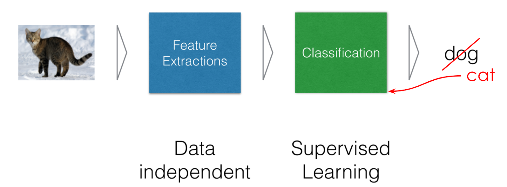 ] --- # Deep Learning system .center[ <img src="images/image_dl.png" style="width: 700px;" /> ] -- - End-to-end system, all parts are trained together in a differentiable way. - Particularly useful for non-tabular input: signals, images, graph, point clouds... --- # Deep Learning requirements? - A lot of labeled data - .grey[Computing power (GPUs, TPUs, ...)] - .grey[Open source tools and models] .center[ <img src="images/ng_data_perf.svg" style="width: 400px;" /><br/><br/> <small>_Adapted from Andrew Ng_</small> ] --- # Deep Learning requirements? - A lot of labeled data - Computing power (GPUs, TPUs, ...) - .grey[Open source tools and models] .center[ <img src="images/gpu_tpu.png" style="width: 450px;" /><br/><br/> <small>_GPU and TPU_</small> ] --- # Deep Learning requirements? - A lot of labeled data - Computing power (GPUs, TPUs, ...) - Open source tools and models .center[ 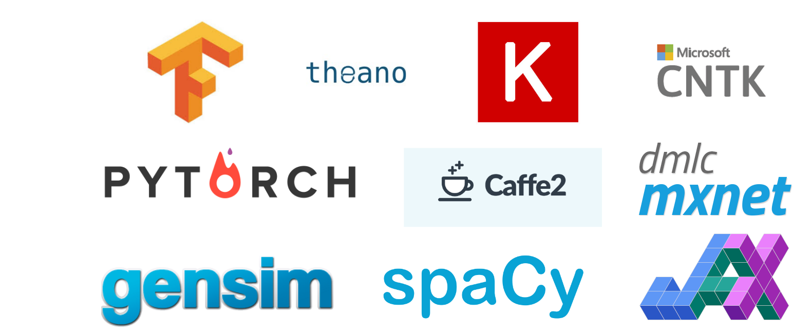<br/><br/> ] --- # DL Today: Vision .center[ 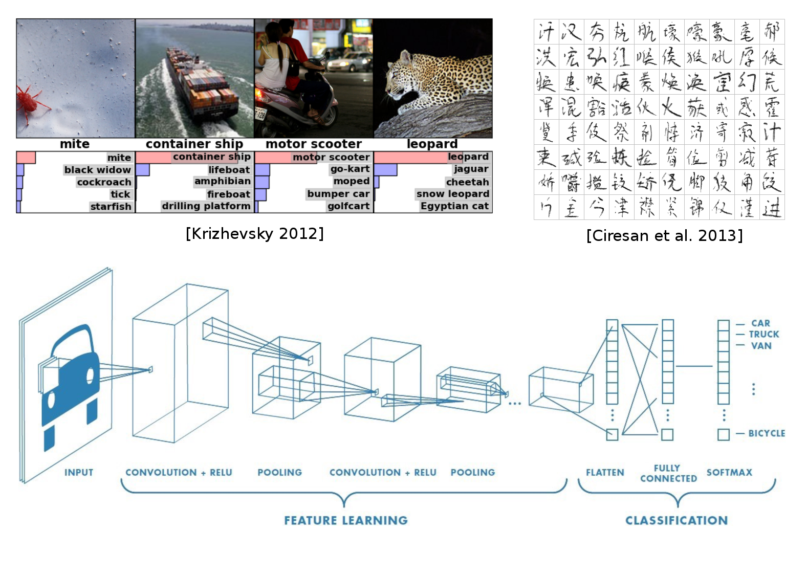 ] --- # DL Today: Vision .center[ 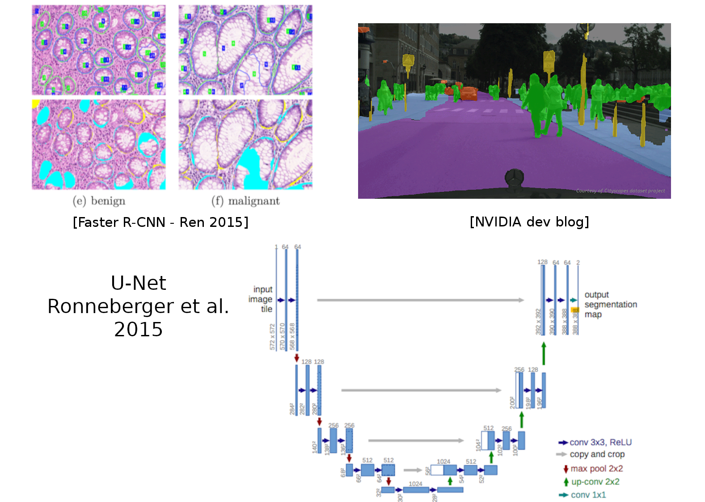 ] --- # DL Today: Speech-to-Text .center[ <img src="images/speech.png" style="width: 780px;" /> ] --- # DL Today: NLP .center[ 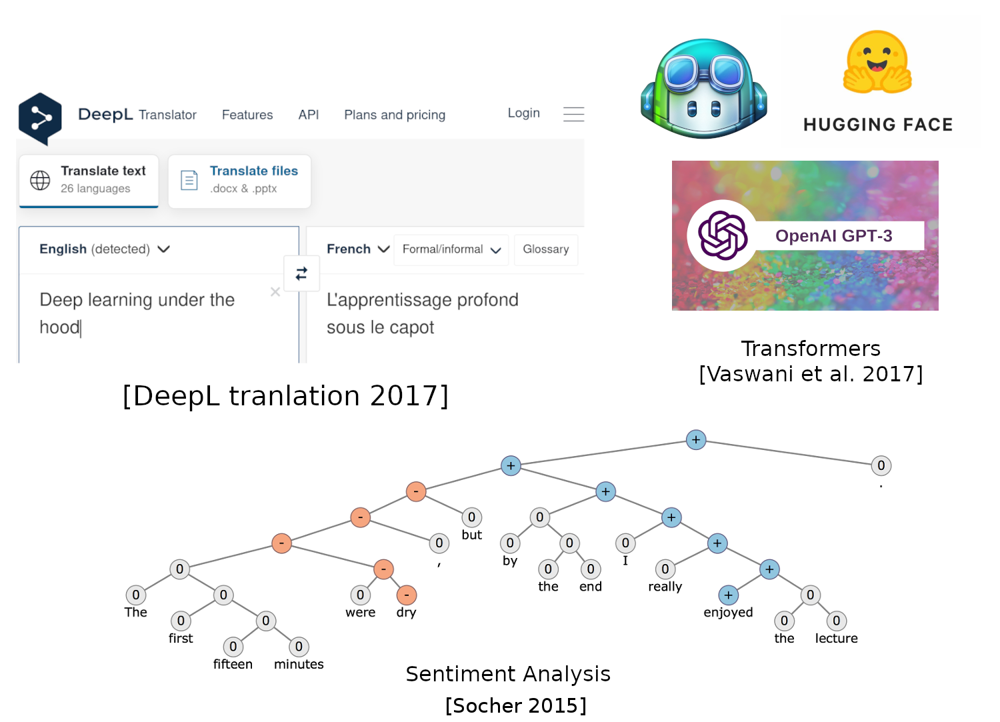 ] --- # DL for AI in games .center[ 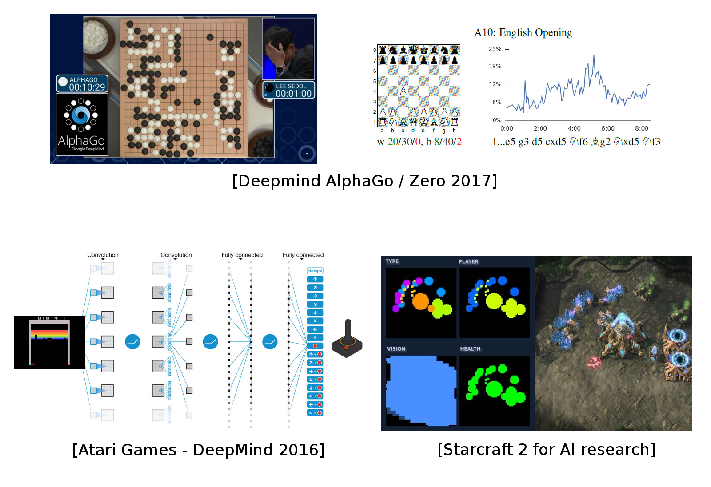 ] -- <small> AlphaGo/Zero: Monte Carlo Tree Search, Deep Reinforcement Learning, self-play </small> --- # DL in Science: Genomics .center[ <img src="images/deepgenomics.png" style="width: 580px;" /> ] <br/> .center[ <img src="images/protein_fold.gif" style="width: 320px;" /><br/> <small>[AlphaFold by DeepMind](https://deepmind.com/blog/article/alphafold-a-solution-to-a-50-year-old-grand-challenge-in-biology)</small> ] --- # Agenda of the session ### [1. Training a (_Deep Learning_) Model](#21) ### [2. Automatic Differentiation](#35) ### [3. Backpropagation for Deep Learning](#60) ### [4. Backpropagation through time](#71) ### [5. Practical consideration for training Deep models](#91) --- class: center, middle # 1. Training a (_Deep Learning_) Model --- # Model for classification Sample $i$ in dataset $\mathcal S$: - input: $\mathbf{x}_i \in \mathbb{R}^d$ - expected output: $y_i \in [1, C]$ -- <br/> Vector function with tunable parameters $\mathbf{\theta}$ $$ \mathbf{f}(\cdot; \mathbf{\theta}): \mathbb{R}^d \rightarrow (0, 1)^C $$ -- <br/> Output is a conditional probability distribution: $$ \mathbf{f}(\mathbf{x}_i; \mathbf{\theta})_c = P(Y=c|X=\mathbf{x}_i) $$ --- # Evaluate and train the model If all the samples in $\mathcal S$ are independent, the likelihood for the full datasets reads: $$ \prod\_{i \in \mathcal S} P(Y=y\_i|X=\mathbf{x}\_i) = \prod\_{i \in \mathcal S} \mathbf{f}(\mathbf{x}\_i; \mathbf{\theta})\_{y\_i} $$ -- The **negative log likelihood** reads: $$ L(\theta, \mathcal S) = -\frac{1}{|\mathcal S|} \sum\_{i \in \mathcal S} \log \mathbf{f}(\mathbf{x}\_i;\theta)\_{y\_i} + \lambda \Omega(\mathbf{\theta}) $$ $\lambda \Omega(\mathbf{\theta}) = \lambda ||\theta||^2$ is an optional regularization term (a.k.a. "weight decay"). -- Training the model amounts to finding the parameters $\mathbf{\theta}$ that minimize the **negative log likelihood** (or [cross entropy]( https://en.wikipedia.org/wiki/Cross_entropy#Cross-entropy_loss_function_and_logistic_regression)) ??? Minimizing a cost function that depends on a finite training set belong to the framework of Empirical Risk Minimization. Adding a regularization term to the cost function Maximum A Posteriori --- # Stochastic Gradient Descent ### Initialize $\mathbf{\theta}$ randomly -- ### For $E$ epochs perform: - Randomly select a small batch of samples $( B \subset S )$ -- - Compute gradients: $\Delta = \nabla_\theta L(\theta, B)$ -- - Update parameters: $\mathbf{\theta} \leftarrow \mathbf{\theta} - \eta \Delta$ - $\eta > 0$ is called the learning rate -- **Core idea:** good direction on average: $$ \mathbb E\_{B\subset S}[\nabla\_\theta L(\theta, B)] = \nabla\_\theta L(\theta, S) $$ --- # Early stopping .split-50[ .column[ - Stop when no progress on validation loss after `patience` epochs. - Output best validation error model. - Reduce risk of over-fitting. ] .column[ 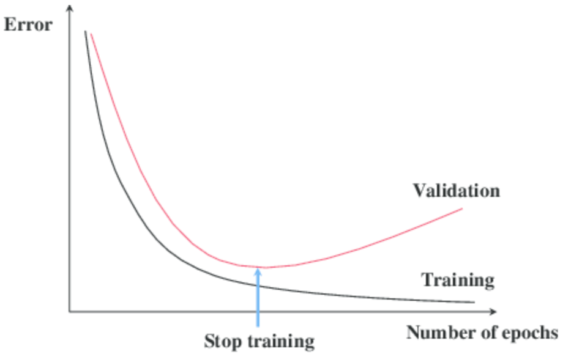 ] ] --- class: center, middle # Practical case with PyTorch: # Fashion MNIST <br/> `00-pytorch-neural-network.ipynb` --- class: center, middle # How to compute the gradient $\nabla_{\mathbf{\theta}}\mathbf{f}(\cdot; \mathbf{\theta})$ for deep models? --- class: center, middle # 2. Introduction to automatic differentiation ### [[Baydin et al., 2015, Automatic differentiation in machine learning: a survey]](https://arxiv.org/abs/1502.05767) --- # Automatic Differentiation? - Method to compute the differential of a function using a computer .split-50[ .column[ ### Input ```python def f(x): return x ** 2 f(1.) >>>> 1. ``` ] .column[ ] ] --- # Automatic Differentiation? - Method to compute the differential of a function using a computer .split-50[ .column[ ### Input ```python def f(x): return x ** 2 f(1.) >>>> 1. ``` ] .column[ ### Output ```python g = grad(f) g(1.) >>>> 2.0 ``` ] ] --- # Automatic Differentiation? - Method to compute the differential of a function using a computer .split-50[ .column[ ### Input ```python def f(x): return np.log(1 + x ** 2) / x f(1.) >>>> 0.6931471805599453 ``` ] .column[ ### Output ```python g = grad(f) g(1.) >>>> 0.3068528194400547 ``` ] ] --- # Prototypical Case .small[ _**Note:** Example in the notebook `01a-forward_backward_diff.ipynb`_ ] - A function $f$ defined recursively: $$ \begin{cases} f\_0(x) = x \\\\ f\_{k+1}(x) = 4 f\_k(x) ( 1 - f\_k(x)) \end{cases} $$ .split-50[ .column[ ### Input ```python def f(x, n=4): v = x for _ in range(n): v = 4 * v * (1 - v) return v f(0.25) >>>> 0.75 ``` ] .column[ ### Output ```python g = grad(f) g(0.25) >>>> -16.0 ``` ] ] --- ## Automatic Differentiation is not... .center[### Numerical differentiation $$ f'(x) \simeq \frac{f(x+h) - f(x)}{h} $$ ] -- In higher dimension: $$ \frac{\partial f}{\partial x_i}(x) \simeq \frac{f(x+h e_i) - f(x)}{h} $$ -- **Drawbacks:** - Computing $\nabla f = [\frac{\partial f}{\partial x\_1}, \cdots, \frac{\partial f}{\partial x\_n}]$ takes $n$ computations - Inexact method - How to choose $h$? --- ## Automatic Differentiation is not... .center[### Numerical differentiation] #### Example ```python from scipy.optimize import approx_fprime approx_fprime(0.25, f, 1e-7) >>>> -16.00001599 ``` -- .center[ 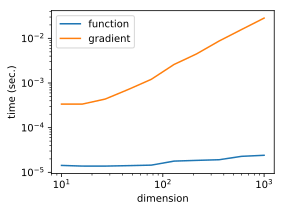 ] --- ## Automatic Differentiation is not... .center[### Symbolic differentiation] - Takes as input a function specified as symbolic operations - Apply the usual rules of differentiation to give the derivative as symbolic operations Example: $f\_4(x) = 64x(1-x)(1-2x)^2 (1-8x+ 8x^2 )^2$, so: .small[ $$ \begin{split} f'\_4(x) = 128&x(1 - x)(-8 + 16x)(1 - 2x)^2(1 - 8x+ 8x^2)\\\\ &+ 64(1-x)(1-2x)^2(1-8x+ 8x^2)^2\\\\ &-64x(1 - 2x)^2(1 - 8x+ 8x^2)^2\\\\ &- 256x(1 - x)(1 -2x)(1 - 8x + 8x^2 )^2 \end{split} $$ ] --- ## Automatic Differentiation is not... .center[### Symbolic differentiation] - Exact - Expression swell: derivatives can have many more terms than the base function .center[ $f_n \qquad\qquad f'_n \qquad\qquad\quad f'_n$ (simplified) 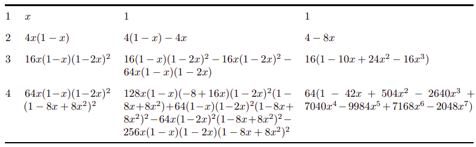 ] --- ## Automatic Differentiation - Function = graph of elementary operations - Apply symbolic differentiation at the elementary operation level. - Keep intermediate numerical results to avoid wasteful recomputation. .center[ 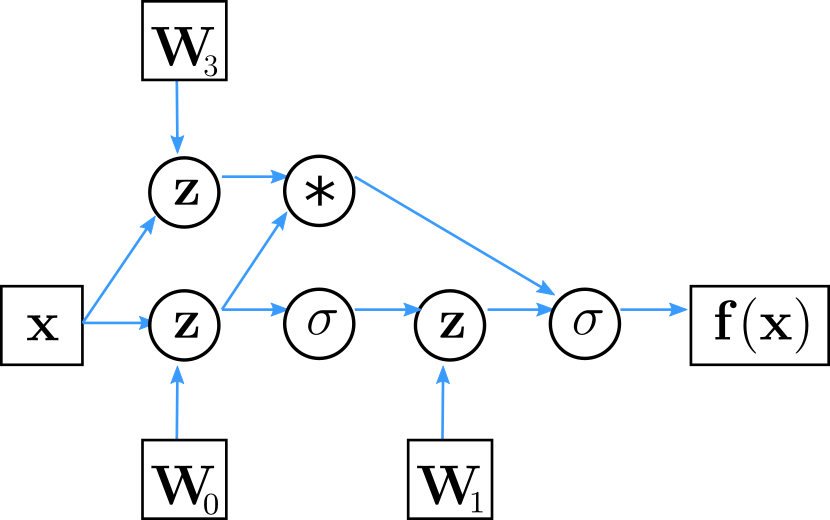<br/> ] --- ## Forward Automatic Differentiation - Follow the graph and differentiate each operation using differentiation rules (linearity, chain rule, ...) $$ \frac{d f\_{k+1}}{d x}(x) = \frac{\partial f\_{k+1}}{\partial f\_{k}}(f\_k(x))\frac{d f\_{k}}{d x}(x) $$ -- $$ \begin{cases} \frac{d f\_0}{d x}(x) = 1 \\\\ \frac{d f\_{k+1}}{d x}(x) = (4 - 8 f\_k(x)) \frac{d f\_k(x)}{d x} \end{cases} $$ -- ```python def g(x, n=4): v, dv = x, 1. for i in range(n): v, dv = 4 * v * (1 - v), (4 - 8 * v) * dv return dv g(0.25) >>>> -16.0 ``` --- ## Forward Automatic Differentiation - Follow the graph and differentiate each operation using differentiation rules (linearity, chain rule, ...) ```python def g(x, n=4): v, dv = x, 1. for i in range(n): v, dv = 4 * v * (1 - v), (4 - 8 * v) * dv return dv g(0.25) >>>> -16.0 ``` .small[ - If $f:\mathbb{R}\to \mathbb{R}^m$: need one pass to compute all derivatives :) - If $f:\mathbb{R}^n \to \mathbb{R}$: need $n$ passes to compute all derivatives :( ] .center[.Large[$\Rightarrow$ Bad for ML]] --- ## Reverse Automatic Differentiation: Backpropagation - Compute the graph and its elements - Go through the graph backwards to compute the derivatives $$ \frac{d f\_{n}}{d f\_k}(f\_k(x)) = \frac{d f\_{n}}{d f\_{k+1}}(f\_{k+1}(x))\frac{\partial f\_{k+1}}{\partial f\_{k}}(f\_k(x)) $$ -- $$ \begin{cases} \frac{d f\_n}{d f\_n}(f\_n(x)) = 1 \\\\ \frac{ d f\_{n}}{d f\_{k}}(f\_k(x)) = \frac{d f\_n}{d f\_{k+1}}(f\_{k+1}(x)) (4 - 8 f\_k(x)) \end{cases} $$ -- .center[ $\Rightarrow$ Need to remember $f\_k(x)$ to compute $\frac{\partial f\_{k+1}}{\partial f\_{k}}(f\_k(x))$ ] --- ## Reverse Automatic Differentiation: Backpropagation - Compute the graph and its elements - Go through the graph backwards to compute the derivatives ``` python def g(x, n=4): v = x memory = [] for i in range(n): memory.append(v) v = 4 * v * (1 - v) dv = 1 for v in memory[::-1]: dv = (4 - 8 * v) * dv return dv g(0.25) >>>> -16.0 ``` --- ## Reverse Automatic Differentiation: Backpropagation - Only one pass to compute gradients of functions $\mathbb{R}^n \to \mathbb{R}$ :) - Takes about the same time to compute the gradient and the function .center[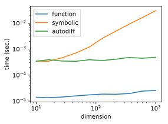] --- ## Reverse Automatic Differentiation: Backpropagation - Only one pass to compute gradients of functions $\mathbb{R}^n \to \mathbb{R}$ :) - Takes about the same time to compute the gradient and the function - Requires memory: need to store intermediate variables .center[.Large[$\Rightarrow$ Good for ML and Deep learning :)]] --- # Automatic Differentiation: Forward and reverse differentiation are 2 ways to compute the same product: $$ \begin{split} \frac{d f\_n}{d x}(x) & = \frac{\partial f\_n}{\partial f\_{n-1}}(f\_{n-1}(x)) \frac{\partial f\_{n-1}}{\partial f\_{n-2}}(f\_{n-2}(x)) \dots \frac{\partial f\_1}{\partial f\_0}(f\_0(x)) \frac{\partial f\_0}{\partial x}(x)\\\\ & = \Bigg(\underbrace{\Big(\frac{\partial f\_n}{\partial f\_{n-1}} \frac{\partial f\_{n-1}}{\partial f\_{n-2}} \dots\Big)}\_{\frac{d f\_n}{d f\_{k}}(f\_{k}(x))} \frac{\partial f\_1}{\partial f\_0}\Bigg) \frac{\partial f\_0}{\partial x}\\\\ & = \frac{\partial f\_n}{\partial f\_{n-1}} \Bigg(\frac{\partial f\_{n-1}}{\partial f\_{n-2}} \underbrace{\Big(\dots \frac{\partial f\_1}{\partial f\_0} \frac{\partial f\_0}{\partial x}\Big)}\_{\frac{d f\_k}{d x}(x)}\Bigg)\\\\ \end{split} $$ --- class: center, middle # 3. Backpropagation for Deep Learning --- # Computation Graph .center[ <img src="images/computation_graph_simple_f.png" style="width: 600px;" /><br/><br/> ] Neural network = parametrized, non-linear function --- # Computation Graph .center[ 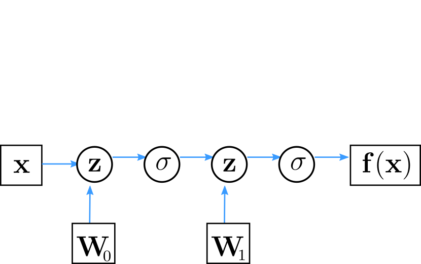<br/><br/> ] Computation graph: Directed graph of functions, depending on parameters (neuron weights) --- # Computation Graph .center[ 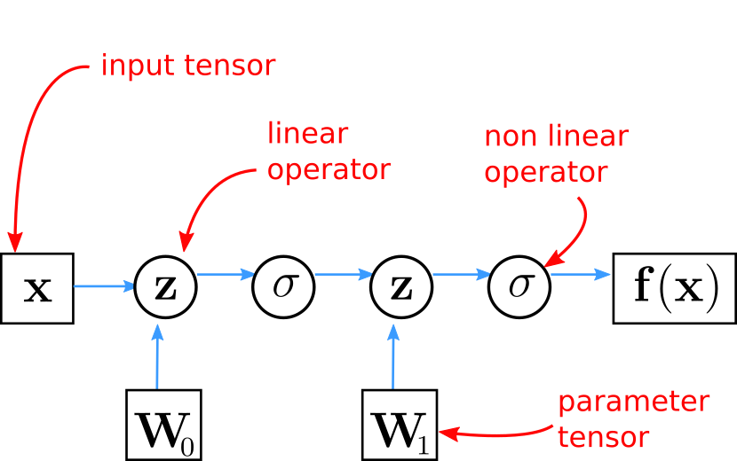<br/><br/> ] Combination of linear (parametrized) and non-linear functions --- # Computation Graph .center[ <br/><br/> ] Not only sequential application of functions --- ### Quick Recap - Chain rule for vectorial functions Consider $\ell(\mathbf{z}): \mathbb{R}^p \to \mathbb{R}$ and $g(\mathbf{x}): \mathbb{R}^q \to \mathbb{R}^p$.<br/> If $\mathbf{z}, \mathbf{x}$ move by $\mathbf{h} \in \mathbb{R}^p$ or $\mathbf{\epsilon} \in \mathbb R^q$, how does the output evolve? $$ \begin{split} \ell(\mathbf{z} + \mathbf{h}) &= \ell(\mathbf{z}) + \frac{\partial \ell}{\partial \mathbf{z}}(\mathbf{z}) . \mathbf{h} + O(\\|h\\|^2), \quad \quad \frac{\partial \ell}{\partial \mathbf{z}}(\mathbf{z}) \in \mathbb R^{1\times p}\\\\ g(\mathbf{x} + \mathbf{\epsilon}) &= g(\mathbf{x}) + \frac{\partial g}{\partial \mathbf{x}}(\mathbf{x}) . \mathbf{\epsilon} + O(\\|\mathbf{\epsilon}\\|^2), \quad \quad \frac{\partial g}{\partial \mathbf{x}}(\mathbf{x}) \in \mathbb R^{p \times q}\\\\ \end{split} $$ -- Then, if I consider $u = \ell \circ g: \mathbb R^q \to \mathbb R$: $$ \begin{split} u(\mathbf{x} + \mathbf{\epsilon}) & = \ell(g(\mathbf{x} + \mathbf{\epsilon})) =\ell\Big(g(\mathbf{x}) + \underbrace{\frac\{\partial g}{\partial \mathbf{x}}(\mathbf{x}) . \mathbf{\epsilon}}\_{\mathbf{h}}+ O(\\|\mathbf{\epsilon}\\|^2)\Big)\\\\ &=\ell(g(\mathbf{x})) + \underbrace{\frac{\partial \ell}{\partial \mathbf{z}}(g(\mathbf{x})) . \frac{\partial g}{\partial \mathbf{x}}(\mathbf{x})}\_{\frac{\partial u}{\partial \mathbf{x}}(\mathbf{x}) \in \mathbb R^{1\times q}} . \mathbf{\epsilon} + O(\\|\mathbf{\epsilon}\\|^2) \end{split} $$ --- # Libraries & Frameworks .center[ <br/><br/> ] Automatic differentiation: _Theano_, TensorFlow, MXnet, CNTK -- Dynamic and high level: **TensorFlow 2**, **PyTorch**, **JAX**, Chainer, MinPy, DyNet... -- **Keras**: high level frontend for TensorFlow, MXnet, Theano, CNTK --- class: center, middle # Coding time! `01b-autograd.ipynb` --- class: center, middle # 4. Backpropagation through time --- # Deep learning for sequences ||X |y | |:---|:---:|:---:| |Speech Recognition | 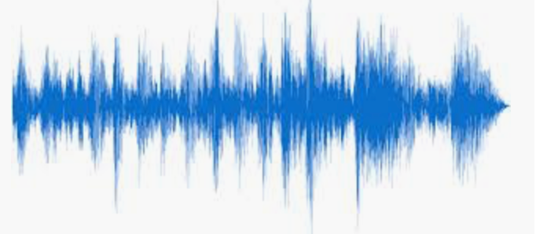| <div style="width: 200px;">.small[« Deep learning is a part of supervised machine learning »]</div>| |Music Generation|$\emptyset$, genre, first few notes| 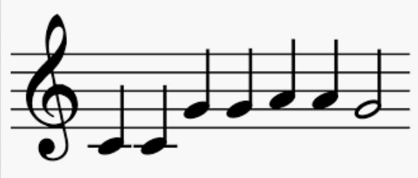| |DNA sequence analysis|CAGACGCTGTGAGGAACTA|CAG<u>**ACGCTGTGAGGA**</u>ACTAG<br/>protein| |Machine translation| "Deep learning is powerful"| "L'apprentissage profond est puissant"| |Activity Recognition|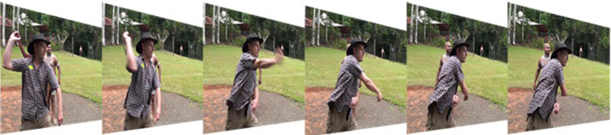|Launching| --- ## Why not use a Feedforward NN? .center[ 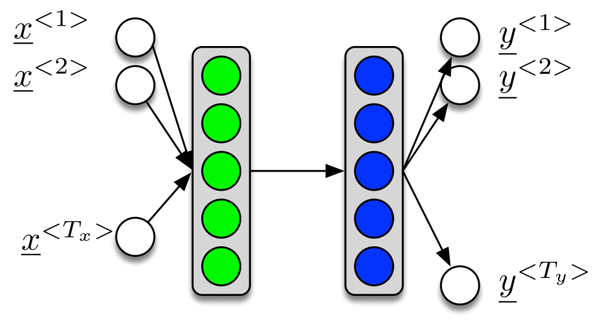 ] - How to handle different lengths $T_x^{(i)} \neq T_x^{(j)}$? - Do we want different $t$ to have different weights? - How to align $t$ for $x^{(i)}$ and $x^{(j)}$? --- # Recurrent Neural network .center[ 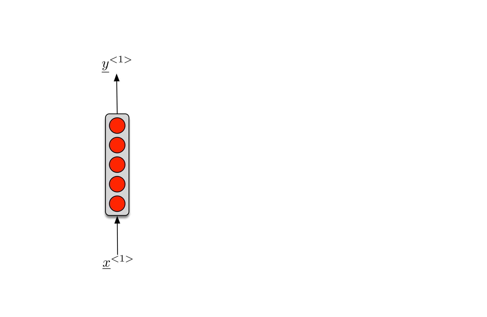 ] --- # Recurrent Neural network .center[ 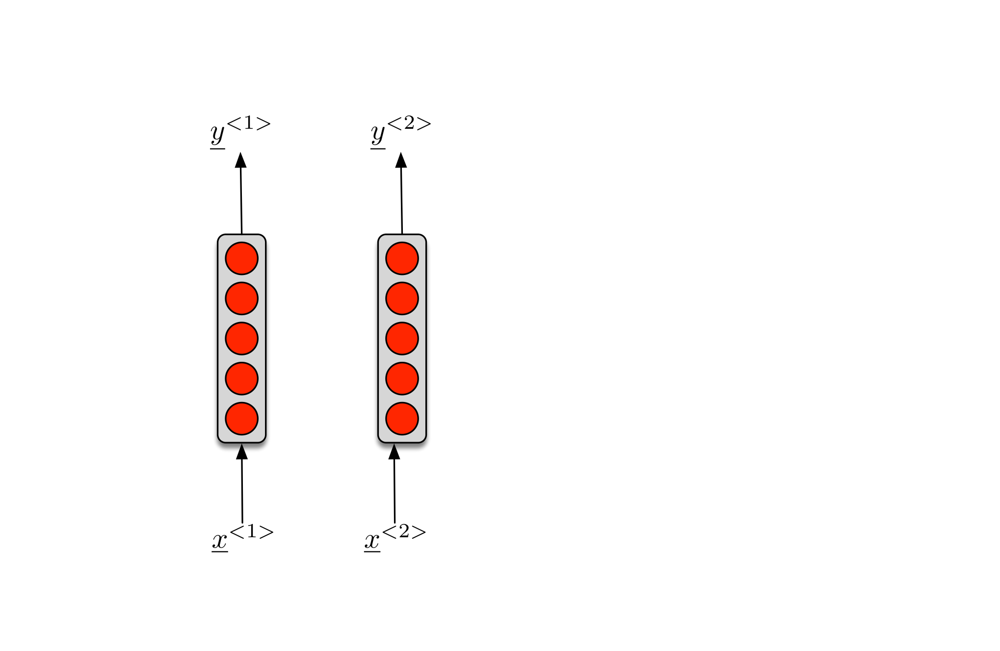 ] --- # Recurrent Neural network .center[ 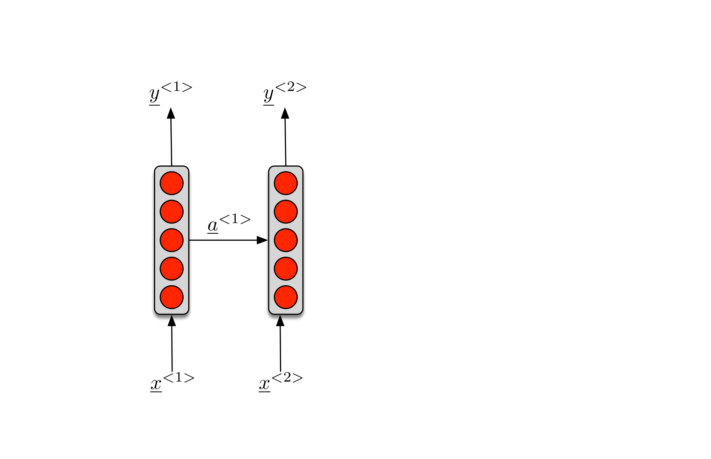 ] - To link the time steps, the first layer passes its activation to the second layer. --- # Recurrent Neural network .center[ 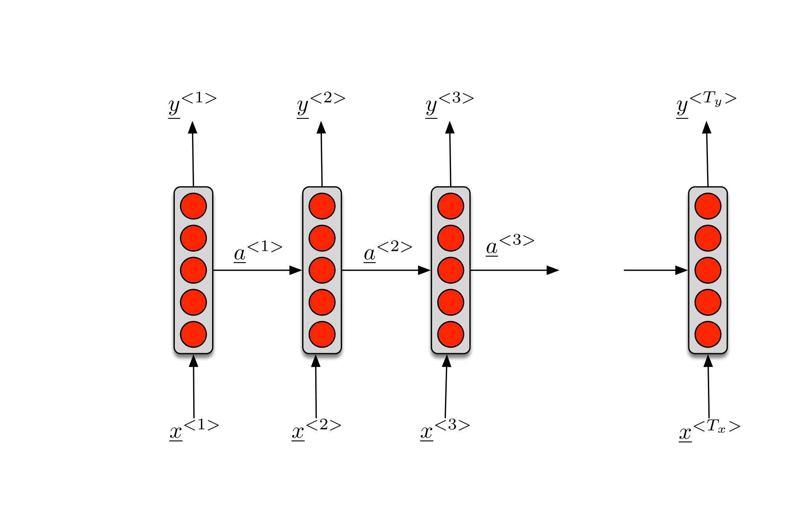 ] - To link the time steps, the layer $< t >$ passes its activation to the layer $< t+1>$. --- # Recurrent Neural network .center[ 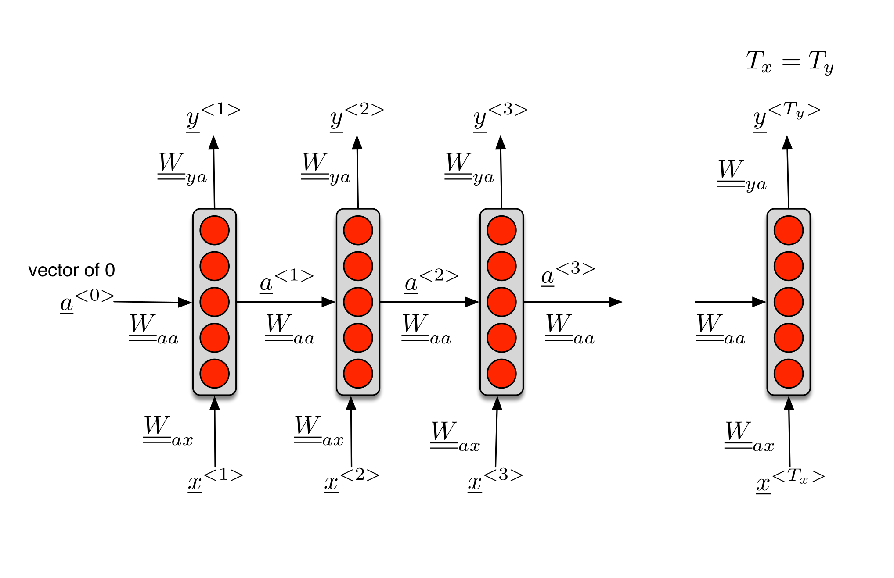 ] - To link the time steps, the layer $< t >$ passes its activation to the layer $< t+1>$. - The weights are shared across all layers. - The initial activation is set to a constant (can be zero or learned). --- # Recurrent Neural network .center[ 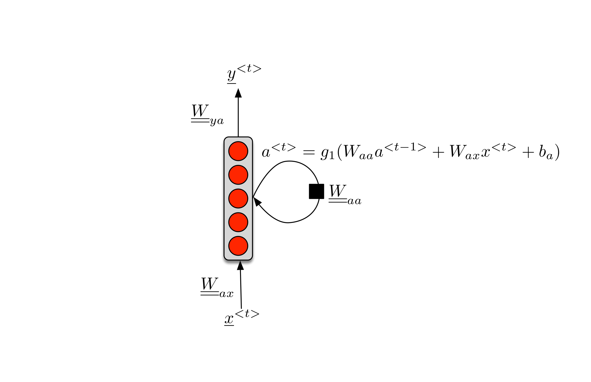 ] - The network is defined using a recurrent equation. - The initial activation is set to a constant (can be zero or learned). --- # Backpropagation in RNN .split-50[ .column[ - Work as if the network is unrolled. - Gradient computed using backpropagation. - ⚠️ The weights are shared across layers. .center[.Large[$\Rightarrow$ Gradient accumulation!]] ] .column[ .right[ 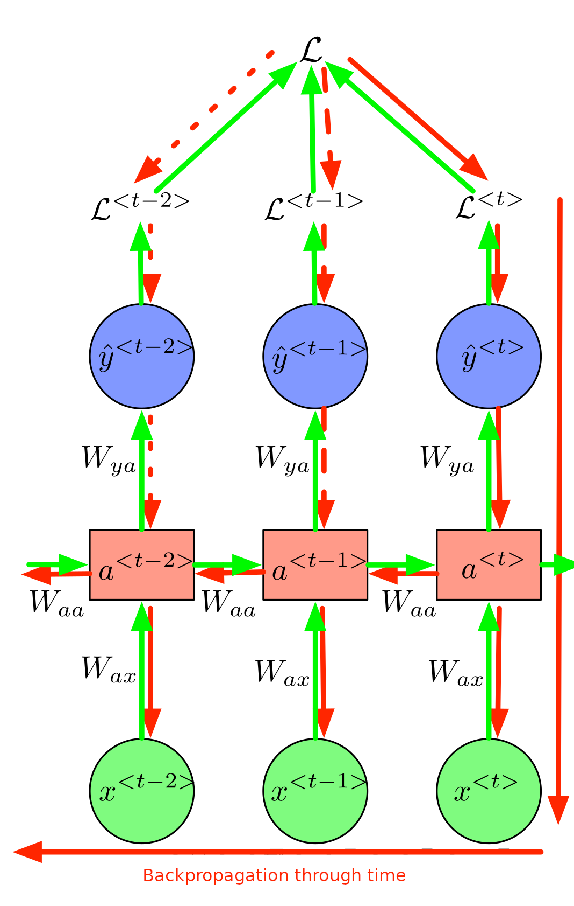 ]] ] --- # Backpropagation in RNN .split-50[ .column[ - Work as if the network is unrolled. - Gradient computed using backpropagation. - ⚠️ The weights are shared across layers. .small[ $$ \frac{\partial L}{\partial W\_{ya}} = \sum\_{t} \frac{\partial L^{< t>}}{\partial W\_{ya}} $$ ] ] .column[ .right[ ]] ] --- # Backpropagation in RNN .split-50[ .column[ - Work as if the network is unrolled. - Gradient computed using backpropagation. - ⚠️ The weights are shared across layers. .small[ $$ \frac{\partial L^{< 1>}}{\partial W\_{aa}} = \frac{\partial L^{< 1>}}{\partial a^{< 1>}}\frac{\partial a^{< 1>}}{\partial W\_{aa}} $$ ] ] .column[ .right[ ]] ] --- # Backpropagation in RNN .split-50[ .column[ - Work as if the network is unrolled. - Gradient computed using backpropagation. - ⚠️ The weights are shared across layers. .small[ $$\begin{split} \frac{\partial L^{< 2>}}{\partial W\_{aa}} = \frac{\partial L^{< 2>}}{\partial a^{< 2>}}\Big(& \frac{\partial a^{< 2>}}{\partial W\_{aa}} \\\\& + \frac{\partial a^{< 2>}}{\partial a^{< 1>}}\frac{\partial a^{< 1>}}{\partial W\_{aa}}\Big) \end{split}$$ ] ] .column[ .right[ ]] ] --- # Backpropagation in RNN .split-50[ .column[ - Work as if the network is unrolled. - Gradient computed using backpropagation. - ⚠️ The weights are shared across layers. .small[ $$ \frac{\partial L^{< t>}}{\partial W\_{aa}} = \frac{\partial L^{< t>}}{\partial a^{< t>}}\sum\_{k=1}^t\Big(\prod\_{l=k}^t \frac{\partial a^{< l+1>}}{\partial a^{< l>}}\Big)\frac{\partial a^{< t>}}{\partial W\_{aa}} $$ ] .small[ $$ \frac{\partial L}{\partial W\_{aa}} = \sum\_{t} \frac{\partial L^{< t>}}{\partial W\_{aa}} $$ ] ] .column[ .right[ ]] ] -- .small[This is the bonus question in<br/> `01a-forward_backward_diff.ipynb`] --- # Issues of Backpropagation ### When the number of layers grows: - Exploding gradients, - Vanishing gradients, .center[<span style="color: gray;">**Solutions:** Initialization; gradient clipping; skip-connections (LSTM, GRU, ResNet ..); Truncated BP </span>] - <span style="color: indianred;"> **Memory:** Need to keep one activation per layer/time step<br/> $\qquad \Rightarrow$ can be huge for large network/sequences!</span> .center[<span style="color: gray;">**Solutions:** Implicit deep learning </span>] --- # LSTM .center[ <img src="images/LSTM3.png" style="width: 600px;"> ] -- - Two internal states - Residual structure to encode long term dependencies -- <a href="https://colah.github.io/posts/2015-08-Understanding-LSTMs/" class="center"> https://colah.github.io/posts/2015-08-Understanding-LSTMs/ </a> --- class: center, middle # Coding time! `02-bach_through_time.ipynb` --- class: center, middle # 5. Practical consideration for training Deep models --- # ResNet18 on CIFAR10 **CIFAR10:** Image classification of $32\times32$ images from 10 classes.<br/> ** ResNet18:** _strong_ baseline for this task.<br/> .center[However, replicating SOTA for this architecture is actually quite hard!] - Optimizer: SGD, Adam, RMSProp, ... - Learning rate: fixed, exponential, cosine annealing, ... - Data augmentation: invariances are for the model - Weight decay? --- # ResNet18 on CIFAR10 .center[ 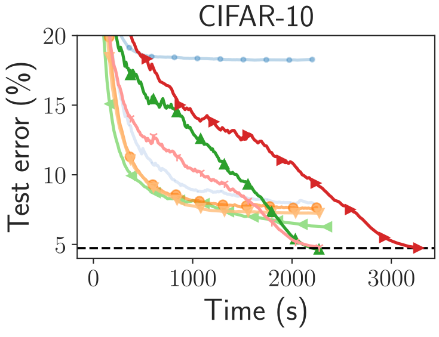 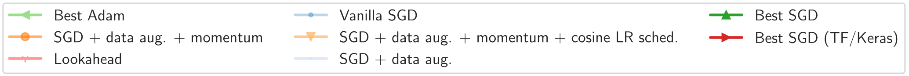 ] --- class: center, middle # Concluding Remarks --- # Recommended reading - [deeplearningbook.org](http://www.deeplearningbook.org/): Math and main concepts - [Francois Chollet's book](https://www.manning.com/books/deep-learning-with-python): Keras programming - [Aurélien Géron's book](https://www.oreilly.com/library/view/hands-on-machine-learning/9781492032632/): Generic Machine Learning with Scikit-learn and Deep Learning with TF/Keras